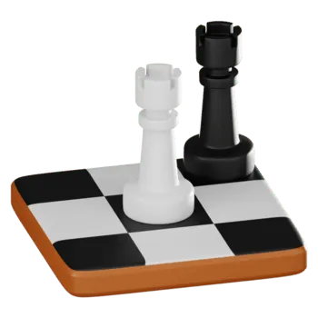

What is chess?
Chess is a board game for two players, played on a square board consisting of 64 squares arranged in an 8×8 grid. The players, referred to as "White" and "Black", each control sixteen pieces: one king, one queen, two rooks, two bishops, two knights, and eight pawns, with each piece type having a different pattern of movement.
Click here for the full content page of the website and how to play chess.
Why even play chess?
- To sharpen memory, pattern recognition and problem-solving skills
- To connect with other players, network and pass time when bored
- To build discipline, patience and resilience
- To have fun!